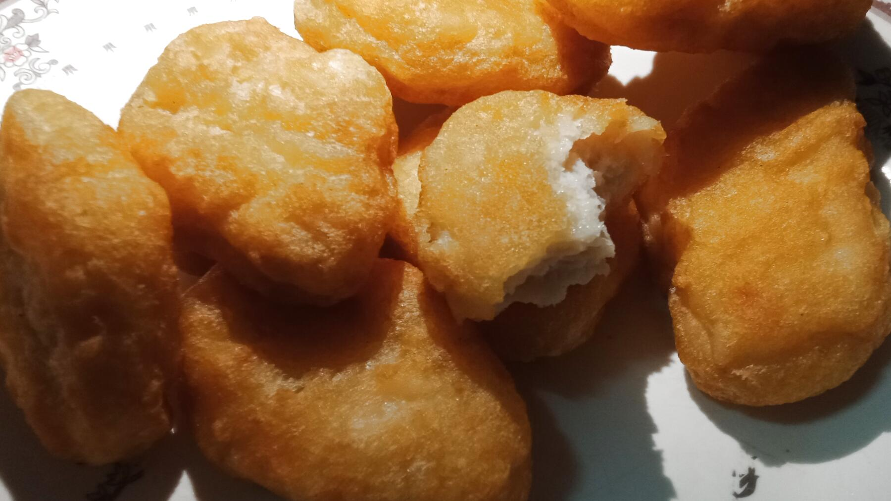

Zurück zur Übersicht
Chicken Nuggets mit zwei Soßen
Selbst gemachte Nuggets mit Panko-Kruste, scharfem Nashville-Überzug, Knoblauch-Chili-Mayo und Honigsenf.
- Zeit
- 4 Std. 15 Min.
- Schwierigkeit
- aufwendig
- Kategorie
- Klassiker
- Ernährung
- fleisch
Zutaten
Portionen
Für die Nuggets
- 450 gHähnchenhackfleisch
- 225 gFettes Schweinehackfleisch
- 12 gSalz
- 6 gMSG
- 8 gZucker
- 2 gWeißer Pfeffer
- 6 gKnoblauchpulver
- 1 gZwiebelpulver
- 24 gSpeisestärke
- 30 mlKaltes Wasser
Für die Knoblauch-Chili-Mayo
- 8Knoblauchzehen
- 240 mlRaps- oder Avocadoöl
- 2Eigelb
- 30 gChili-Crisp
- 30 gDijon-Senf
- 30 mlReisessig
- 30 mlWasser
- Salz
Für den Honigsenf
- 45 gMilder gelber Senf
- 63 gHonig
- 15 mlReisessig
- 80 mlKnoblauch-Chili-Mayo
- Salz
Zum Panieren und Frittieren
- 130 gMehl
- 3Eier
- 90 gPanko
- Neutrales Öl zum Frittieren (etwa 2,8 l)
Für den Nashville-Überzug
- 16 gCayennepulver
- 7 gGeräuchertes Paprikapulver
- 18 gKnoblauchpulver
- 5 gZwiebelpulver
- 24 gHeller brauner Zucker
- 8 gSalz
- 6 gMSG
- 240 mlHeißes Frittieröl
Zubereitung
- Beide Hackfleischsorten im Blitzhacker fein zerkleinern. Salz, MSG, Zucker, Pfeffer, Knoblauch- und Zwiebelpulver und Stärke einarbeiten und alles fein pürieren. Kaltes Wasser unterarbeiten. Mindestens 3 Stunden kalt stellen, besser über Nacht.
- Für die Mayo den Knoblauch im Öl bei niedriger bis mittlerer Hitze etwa 20 Minuten weich garen, ohne dass er braun wird. Das Öl auf etwa 38 °C abkühlen lassen.
- Knoblauch mit Eigelb, Chili-Crisp, Senf, Essig und Wasser in ein hohes Gefäß geben, mit dem Stabmixer pürieren und das Öl langsam einlaufen lassen, bis eine cremige Mayo entsteht. Salzen.
- Für den Honigsenf alle Zutaten verrühren und mit Salz abschmecken.
- Aus der Masse mit einem Portionierer etwa 50 g große Stücke abstechen, zu etwa 1 cm dicken Nuggets formen und auf Backpapier legen.
- Eier verquirlen, Panko leicht zerdrücken. Nuggets nacheinander in Mehl, Ei und Panko wenden und gut andrücken.
- Öl in einem schweren Topf auf 175 °C erhitzen. Nuggets portionsweise 3–4 Minuten goldbraun frittieren, bis sie innen 74 °C erreichen. Sofort salzen.
- Für den Überzug die Gewürze mischen und das heiße Frittieröl einrühren, bis eine glatte Soße entsteht. Nuggets darin wenden, auf einem Gitter kurz ruhen lassen und mit den beiden Soßen servieren.
Quelle: nach einem Rezept von Joshua Weissman.